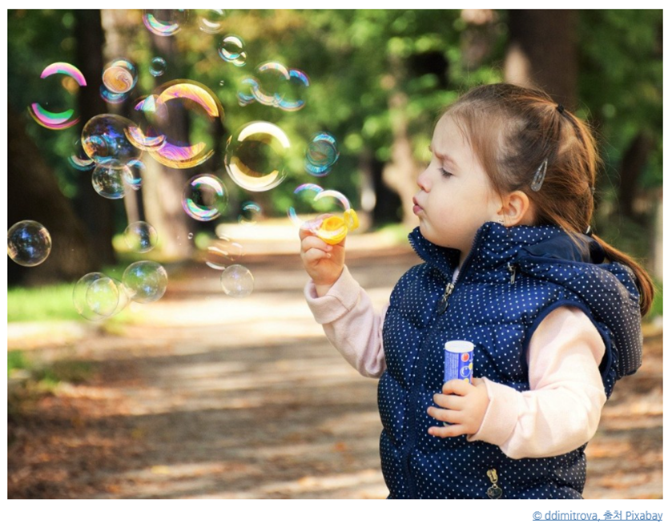

정서의 의의 및 특징
영아는 기쁨이나 슬픔, 두려움과 불안과 같은 기본 정서를 가지고 태어난다. 정서는 자주 변하고 빈번하게 나타낼 수 있도록 해야 한다. 정서는 내적·외적 자극에 직면하면 발생하거나 자극에 수반되는 생리적 변화나 애정, 기쁨, 불안, 두려움 등 여러 가지 감정이다.
영아는 자신의 상태를 양육자에게 특정 자극으로 알림으로써 자신을 보살피게 하는 기능을 한다(Lamb, 1988). 영아는 양육자의 행복이나 기쁨, 분노나 짜증 등 모방과 강화를 통해 자신의 정서를 표현함으로써 점차 사회·문화적으로 용인된 방식으로 나타내면서 환경에 적응해 간다.

정서는 여러 가지 분화의 단계를 거치면서 발달
이자드(Izard, 1978)에 의하면 선천적으로 세계 모든 문화권의 보편적으로 볼 수 있는 기본적인 정서로 생후 8개월 전후하여 출현하는 일차 정서(기쁨, 공포, 분노, 불안 등)와 18개월경 자기 인식의 발달로 나타나는 이차 정서(질투, 당황, 자긍심, 수치심 등)로 구분한다. 버거(Berger, 2003)는 정서분화 과정에서 신생아는 만족과 불만족 두 가지만 가지고 있다고 보았다.
정서 발달의 단계
- 영아는 배가 고플 때, 고통을 느낄 때 이유 없이 울고, 배가 부르거나 잠을 잘 잤을 경우 행복해 한다.
- 3~4개월이면 웃음과 호기심, 분노, 화를 나타낸다.
- 9개월 경에는 분노가 절정에 다다르고 낯선사람에 대한 불안과 양육자로부터의 분리불안을 나타낸다.
- 1년 이후에는 기쁨, 불만족, 흥미, 공포, 분노 등 일차 정서가 나타낸다.
- 2세경에는 수치심, 자부심, 당황, 죄책감 등 이차 정서가 나타난다.
- 이후 대체로 2세가 끝날 무렵까지 성인에게서 볼 수 있는 모든 정서가 대부분 나타난다.
Berger의 정서발달 과정의 특성은 다음과 같다.
| Berger의 정서발달 과정 | |
| 출현 시기 | 정서 특성 |
| 출생 | 만족, 불만족 |
| 6주 | 사회적 미소 |
| 3개월 | 웃음, 호기심 |
| 4개월 | 환한 미소, 분노 |
| 9개월 | 낯선 이에 대한 공포, 분리불안 |
| 18개월 | 수치심, 자부심, 당황, 죄책감 |
| 출처: 김현호 외 공저( 2014) p 261 | |
정서의 기능 요인
모든 정서는 유기체가 환경에 적응적으로 행동하는 것을 도와주는 기능을 가지고 있다. 정서는 개인의 삶을 유지할 수 있도록 도와주는 것이다. 정서와 관련된 기능 요인을 살펴보고자 한다.
1) 생리학적 요인
생리적인 요인은 호르몬이나 자율신경계에 의한 신체적 변화이다. 정서 발달에 대해 학자들은 정서란 미분화된 상태에서 연령이 증가함에 따라 점차 분화된다고 주장하였다. 신생아의 경우 흥분상태에서 먼저 유쾌와 불쾌의 정서를 나타낸다. 이후 불쾌한 정서는 더욱 분화되어 분노， 혐오, 공포， 슬픔 등의 정서가 나타난다. 유쾌한 정서 또한 분화되어 행복， 기쁨， 만족 등의 정서가 나타낸다(정옥분 외, 2007).
정서를 생물학적 견해를 표명하는 대표적 학자는 에크만(Ekman)과 이자드(lzard)이다(유효순 외, 2014). 에크만(1973)은 여러 문화권에서 사람들을 관찰한 후 문화마다 기본 정서를 나타내는 보편적 정서표현이 유사함을 발견하였다.
신생아는 선천적으로 몇 가지 정서를 표현하며, 얼굴 표정만으로도 정서 상태를 쉽게 알 수 있다는 것이다. 정서적 의사소통을 통해 타인으로부터 원하는 정서를 유도할 수 있다. 얼굴표정이나 소리, 몸짓을 통해서 양육자로 하여금 자신을 돌보게 할 뿐 아니라 촉진시켜 준다.
2) 뇌 신경학적 요인
뇌 신경학적 요인은 뇌의 발달과 정서발달은 편도체에 의한 것이다. 편도체는 외부로부터 들어오는 자극의 의미를 처리하는 곳으로써 손상을 입었을 경우 감정표현이 어렵고 정서적 단서를 민감하게 처리하고 반응이 매우 어렵다. 대뇌피질은 뇌의 가장 상층부에 있으며 이성, 지성, 갈등, 행복 등 고등 감정을 조절한다.
영아가 자신의 감정을 다스리지 못하고 어떻게 표현할 줄 모르거나 충동적인 행동을 나타내는 것은 감정을 다스리는 변연계와 전두엽이 아직 발달하지 않았기 때문에 표출한다는 것이다. 정서는 영아가 성장함에 따라 환경과 서로 다른 문화적 표현 양식을 습득하고 다양한 경험의 증가에 따라 대뇌의 변연계가 조절된다.
3) 인지 ․ 사회적 요인
인지 ․ 사회적 요인은 영아의 정서의 경험과 표현이 인지발달과 사회적 상호작용을 통해 사회화가 된다. 정서는 인류가 환경에 적응하도록 돕는 것으로 인류가 환경에서 살아남고 자신의 삶을 유지하도록 기능을 한다. 미소는 다른 사람의 행복한 감정을 증진시켜서 관계를 강화시켜준다.
인지 ․ 사회적 요인은 영아가 타인과의 관계를 유지하거나 통제하기도 하는 관계이다. 정서를 인지 ․ 사회적 요인은 영아가 기쁨， 분노， 두려움 등 대상영속성을 경험과 이해이다. 이러한 요인은 환경적 자극과 그러한 자극에 대한 반응 사이를 연결하는 인지발달과 사회적 요인의 역할이다.
출처: 영유아발달(2018). 김영애, 선애순, 정효정. 양서원
2022.01.07 - [분류 전체보기] - 애착 형성 및 유형-안정 애착과 불안정 회피, 저항,혼란 애착
애착 형성 및 유형-안정 애착과 불안정 회피, 저항,혼란 애착
애착의 형성 및 유형의 의의 영아의 애착형성은 개인차를 보이는데 에인즈워스와 동료들(Ainsworth et al., 1978)는 ‘낯선 상황실험’을 실시하여 애착 유형을 나뉘었다. 이 실험 과정은 에피소드를
think-sis.tistory.com